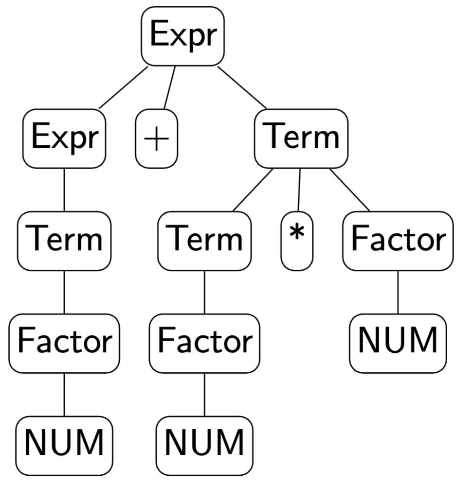
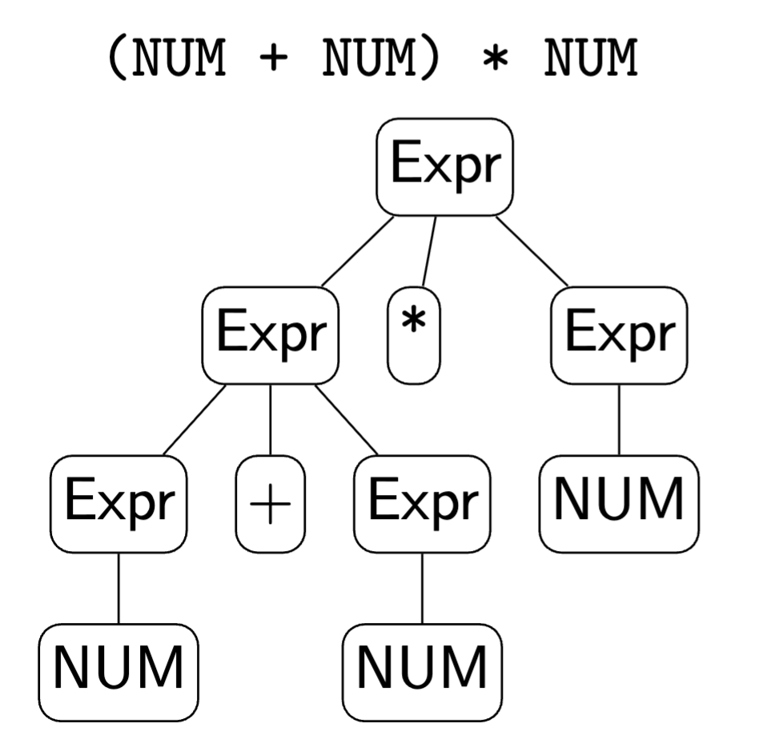
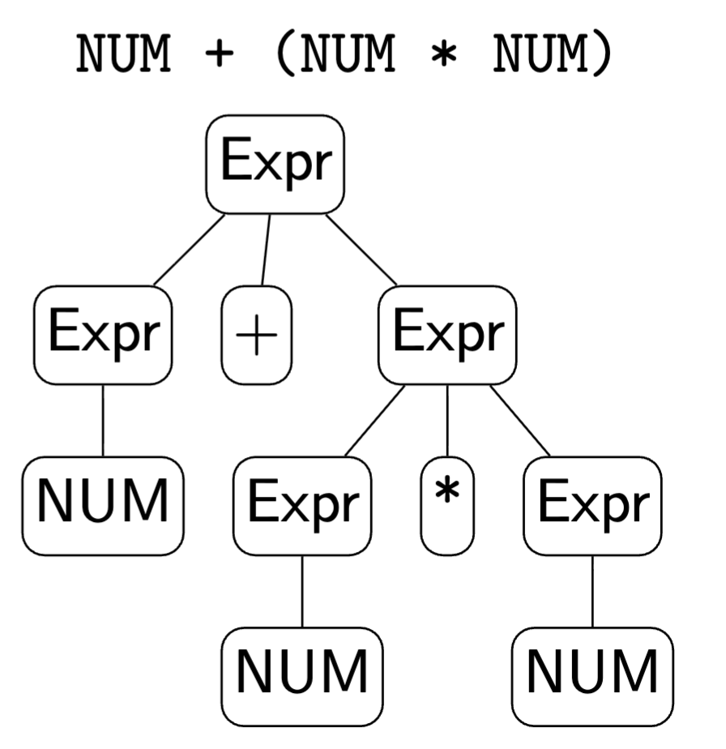
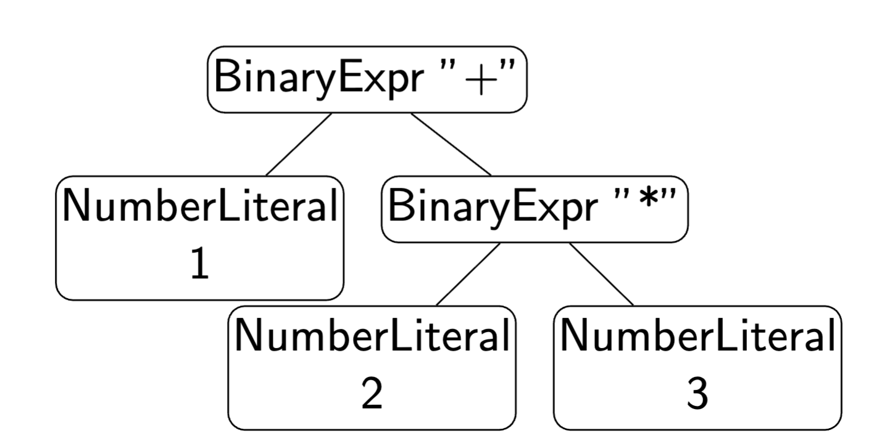

Grammars, Parsing & ASTs
Module 3
Liting Zhang
Big picture and grammar motivation
Big Picture: Where Are We in the Compiler Pipeline?
-
So far (Week 2): lexical structure
-
Raw source $\rightarrow$ characters $\rightarrow$ tokens
-
Tokens: keywords, identifiers, literals, operators, separators, comments
-
Implemented with regular expressions and a tiny JavaScript lexer
-
-
This week (Week 3): syntax
-
How do we describe valid sequences of tokens?
-
How do we turn a token stream into a tree structure?
-
-
Pipeline view: \[ \text{Source} \;\to\; \text{Lexer} \;\to\; \text{Parser} \;\to\; \text{AST} \;\to\; \text{Later passes} \]
Week 3 Plan
-
Context-free grammars (CFGs)
-
BNF/EBNF notation
-
Derivations and parse trees
-
Ambiguity, precedence, associativity
-
Abstract syntax trees (ASTs) vs parse trees
-
Recursive descent parsing (top-down, hand-written)
-
JavaScript demo: expression parser that builds an AST
-
Java/C++ grammar snippets, parser generators (ANTLR)
Why Do We Need Grammars?
-
Natural language analogy:
-
English has nouns, verbs, sentences, and rules for combining them.
-
Programming languages also have rules: "an if statement looks like this..."
-
-
We want a precise, formal way to say:
-
which token sequences are valid programs
-
how they are structured as trees
-
-
Grammars:
-
are the standard formalism for language syntax
-
are used by parser generators and hand-written parsers
-
CFGs: Informal idea
A context-free grammar describes valid strings with production rules. Core ingredients: terminals, nonterminals, a start symbol, and productions.
CFGs: Terminals
-
Terminals:
-
things that actually appear in the input token stream
-
examples:
if,else,+,(,),IDENT,NUM -
in practice, these often correspond to lexer token types
-
CFGs: Nonterminals and start symbol
-
Nonterminals:
-
names for syntactic categories (abstract "slots" in the structure)
-
examples:
Expr,Stmt,Block,Type -
do not appear literally in the source code
-
-
Start symbol:
-
the nonterminal that represents a complete valid input
-
often called
ProgramorCompilationUnit
-
CFGs: Productions
Productions describe how a nonterminal expands into terminals and other nonterminals:
-
Expr -> Expr "+" Term -
Stmt -> "if" "(" Expr ")" Stmt
Terminals vs Nonterminals
Consider the source fragment:
42 + x * (y + 3)After lexical analysis (Week 2), we might get tokens:
NUMBER(42) PLUS("+") IDENT(x) STAR("*")
LPAREN("(") IDENT(y) PLUS("+") NUMBER(3) RPAREN(")")-
Terminals: token types such as
NUMBER,PLUS,IDENT,STAR,LPAREN,RPAREN -
Nonterminals: categories we use in the grammar, for example
-
Exprfor "any expression" -
Termfor "multiplication/division group" -
Factorfor "single number, variable, or parenthesized expression"
-
-
Intuition: terminals are the leaves of the parse tree, nonterminals are the internal nodes that organize them.
Practice: terminals and nonterminals
Consider a grammar for a tiny expression and statement language. Look at the following symbols:
Expr Stmt if else NUM IDENT +Questions (discuss with a neighbor):
-
Which of these would typically be terminals?
-
Which of these would typically be nonterminals?
Practice answers: terminals and nonterminals
One reasonable classification:
-
Likely nonterminals (syntactic categories):
-
Expr,Stmt
-
-
Likely terminals (tokens from the lexer):
-
if,else,NUM,IDENT,+
-
A Tiny Arithmetic Expression Grammar
Terminals (coming from the lexer):
-
NUM,+,*,(,)
Nonterminals:
-
Expr,Term,Factor
Grammar: \[ \begin{array}{rcl} \text{Expr} &\rightarrow& \text{Expr} + \text{Term} \;\mid\; \text{Term} \\ \text{Term} &\rightarrow& \text{Term} * \text{Factor} \;\mid\; \text{Factor} \\ \text{Factor} &\rightarrow& ( \text{Expr} ) \;\mid\; \text{NUM} \end{array} \]
This grammar generates strings like:
-
NUM -
NUM + NUM -
NUM * NUM + NUM -
(NUM + NUM) * NUM
Grammar notation: BNF, EBNF, and derivations
BNF Notation
BNF = Backus--Naur Form
Common conventions:
-
Nonterminals: capitalized or in angle brackets, e.g.
<expr> -
Terminals: literal symbols or tokens, e.g.
"+","if" -
Productions: $<expr> ::= <expr> "+" <term>| <term>$
Arithmetic example in BNF:
<expr> ::= <expr> "+" <term> | <term>
<term> ::= <term> "*" <factor> | <factor>
<factor> ::= "(" <expr> ")" | NUMBNF is widely used in language specifications (for example, early C and Pascal).
EBNF: Extended BNF
EBNF adds shorthand:
-
A*= zero or moreA -
A+= one or moreA -
[A]= optionalA
Example: a comma-separated list of identifiers
<id-list> ::= IDENT ("," IDENT)*Expression example:
<expr> ::= <term> ("+" <term>)*
<term> ::= <factor> ("*" <factor>)*
<factor> ::= "(" <expr> ")" | NUMEBNF is easier to read and closer to how we think about repetition and options.
Derivations: How Grammars Generate Strings
-
A derivation starts at the start symbol and repeatedly applies productions.
-
Arithmetic grammar (example):
Expr -> Expr "+" Term | Term
Term -> Term "*" Factor | Factor
Factor -> NUM
-
Leftmost derivation of
NUM + NUM * NUM:
- Different derivation orders (leftmost vs rightmost) give the same final string, but may correspond to different parse trees for ambiguous grammars.
Practice: derivations
Use the (precedence-aware) grammar:
Expr -> Expr "+" Term | Term
Term -> Term "*" Factor | Factor
Factor -> "(" Expr ")" | NUMConsider the string:
(NUM + NUM) * NUMTasks:
-
Write out a leftmost derivation for this string, starting from
Expr. -
At which step does the grammar "decide" that
"*"binds tighter than"+"? (Hint: look at whenTermexpands.)
Do not worry about the actual numbers; just use the token name NUM.
Practice answers: derivations (grammar)
Expr -> Expr "+" Term | Term
Term -> Term "*" Factor | Factor
Factor -> "(" Expr ")" | NUM-
One leftmost derivation for
(NUM + NUM) * NUM:
\[ \begin{aligned} \text{Expr} &\Rightarrow \text{Term} \\ &\Rightarrow \text{Term} * \text{Factor} \\ &\Rightarrow \text{Factor} * \text{Factor} \\ &\Rightarrow ( \text{Expr} ) * \text{Factor} \\ &\Rightarrow ( \text{Expr} + \text{Term} ) * \text{Factor} \\ &\Rightarrow ( \text{Term} + \text{Term} ) * \text{Factor} \\ &\Rightarrow ( \text{Factor} + \text{Term} ) * \text{Factor} \\ &\Rightarrow ( \text{NUM} + \text{Term} ) * \text{Factor} \\ &\Rightarrow ( \text{NUM} + \text{Factor} ) * \text{Factor} \\ &\Rightarrow ( \text{NUM} + \text{NUM} ) * \text{Factor} \\ &\Rightarrow ( \text{NUM} + \text{NUM} ) * \text{NUM} \end{aligned} \]
Parse trees and ambiguity
Parse Trees
A parse tree (also called a concrete syntax tree):
-
reflects the structure of a derivation
-
has nonterminals as internal nodes
-
has terminals (tokens) as leaves
For NUM + NUM * NUM with our grammar:
-
Root:
Expr -
Children:
Expr,+,Term -
Exprchild:Term -
Termchild:Factor -
and so on
Parse Tree for NUM + NUM * NUM
-
Root nonterminal:
Expr -
Grammar enforces that
*binds tighter than+
Grammar:
<Expr> ::= <Expr> "+" <Term> | <Term>
<Term> ::= <Term> "*" <Factor> | <Factor>
<Factor> ::= "(" <Expr> ")" | NUM
Ambiguity in Grammars
A grammar is ambiguous if at least one string has two different parse trees.
Example of an ambiguous expression grammar:
Expr ::= Expr "+" Expr
| Expr "*" Expr
| NUM-
The string
NUM + NUM * NUMcan parse as:-
(NUM + NUM) * NUM -
NUM + (NUM * NUM)
-
-
Arithmetic meaning is usually
*before+.
Real languages avoid ambiguity (or define disambiguation rules) to make parsing deterministic and semantics clear.
Ambiguous Parse Trees for NUM + NUM * NUM
We use the ambiguous grammar:
Expr ::= Expr "+" Expr
| Expr "*" Expr
| NUMFor the string NUM + NUM * NUM, there are two parse trees:


Ambiguity: The Dangling Else Problem
Classic example in many language grammars:
Stmt ::= "if" "(" Expr ")" Stmt
| "if" "(" Expr ")" Stmt "else" Stmt
| ...The string:
if (c1)
if (c2)
s1;
else
s2;Two possible parses:
-
elsematches the innerif -
elsematches the outerif
Most languages (C, Java, JavaScript) use the rule:
-
elseis matched with the nearest preceding unmatchedif
Fixing Precedence and Associativity
We can encode precedence and associativity in the grammar.
Precedence (multiplication tighter than addition):
Expr ::= Term ("+" Term)*
Term ::= Factor ("*" Factor)*
Factor ::= "(" Expr ")" | NUMAssociativity example (left-associative +):
-
Expr $\rightarrow$ Expr "+" Term $\mid$ Term
-
or with EBNF:
Expr -> Term ("+" Term)* -
This forces
a + b + cto parse as(a + b) + c.
Designing grammars is partly math and partly language design.
Java and C++ Grammar Snippets
-
Real languages have large grammars (hundreds of rules).
-
Example, simplified from a Java expression grammar:
Expression ::= AssignmentExpression AssignmentExpression ::= ConditionalExpression | LeftHandSideExpression AssignmentOperator Expression ConditionalExpression ::= LogicalOrExpression | LogicalOrExpression "?" Expression ":" ConditionalExpression -
C++ has an even more complex grammar because of templates, operator overloading, and other features.
-
Takeaway: the same CFG ideas scale up to industrial languages.
Summary So Far
-
Tokens from the lexer are organized by a parser using a grammar.
-
CFGs describe syntax via terminals, nonterminals, productions, and a start symbol.
-
BNF and EBNF are notations for writing grammars.
-
Derivations and parse trees show how strings are generated.
-
Ambiguity is problematic for compilers; we often fix it using precedence and associativity.
ASTs and their role
From Parse Trees to ASTs
Parse tree:
-
very close to the grammar
-
includes all parentheses, keywords, and punctuation
-
often quite bushy
Abstract syntax tree (AST):
-
more compact, semantics-oriented structure
-
drops syntax sugar and unnecessary nodes
-
children represent meaningful subexpressions, not just grammar artifacts
AST vs Parse Tree: Visual Comparison
-
Parse tree closely mirrors the grammar:
-
nodes such as
Expr,Term,Factor -
parentheses appear as their own leaves
-
-
AST:
-
internal nodes represent operations, such as
BinaryExpr,UnaryExpr,CallExpr -
leaves represent identifiers and literals, such as
Identifier,Number,String
-
In implementation:
-
AST nodes are usually classes or structured objects.
-
Later phases (type checking, interpretation, code generation) use the AST.
AST Node Shapes for a Tiny Expression Language
Suppose we support:
-
numbers
-
binary operators
+and* -
parentheses
We might define AST node "types" as JavaScript objects:
{ type: "NumberLiteral", value: 42 }
{
type: "BinaryExpr",
op: "+",
left: { /* another AST node */ },
right: { /* another AST node */ }
}Later, an interpreter can evaluate:
-
NumberLiteralby returning its value -
BinaryExprby recursively evaluatingleftandright, then applyingop
Example AST for 1 + 2 * 3
A possible AST (as JavaScript-style objects):
{
type: "BinaryExpr",
op: "+",
left: { type: "NumberLiteral", value: 1 },
right: {
type: "BinaryExpr",
op: "*",
left: { type: "NumberLiteral", value: 2 },
right: { type: "NumberLiteral", value: 3 }
}
}Visual tree:

Industry angle: how TypeScript / JavaScript tools parse code
Modern tooling for TypeScript and JavaScript (editors and CLIs) uses parsers:
-
language servers (for example VS Code) provide:
-
syntax highlighting
-
go-to-definition, rename, code completion
-
-
analysis tools:
-
ESLint, TypeScript compiler, static analyzers
-
-
code transformation tools:
-
Babel, swc, TypeScript compiler emitters
-
All of these have a pipeline very similar to our toy compiler:
\[ \text{Source} \to \text{Lexer} \to \text{Parser} \to \text{AST} \to \text{Analysis / Transformations} \]
Parsing strategies: top-down and bottom-up
Top-down parsing
-
start from the start symbol (for example
Expr) -
predict which productions to use, based on the next tokens
-
build the tree from the root down toward the leaves
-
examples:
-
hand-written recursive descent (what we are doing)
-
LL (Left-to-right, Leftmost derivation) parsers generated by tools
-
Bottom-up parsing
-
start from the input tokens
-
repeatedly combine tokens and partial subtrees into larger phrases
-
build the tree from the leaves up toward the root
-
examples:
-
LR (left-to-right, rightmost-derivation-in-reverse), LALR, GLR parsers
-
traditional parser generators such as YACC, Bison
-
Top-down vs bottom-up in real parsers
-
many modern language implementations use:
-
hand-written recursive descent (top-down), or
-
parser generators that produce LL-style top-down parsers
-
-
classic C and C++ compilers have often used:
-
LALR bottom-up parsers generated by YACC or Bison
-
-
Reasons to choose one or the other include:
-
control over error messages and recovery
-
convenience of writing and maintaining the grammar
-
performance and the complexity of the language syntax
-
-
For this course, recursive descent is a good model: the code is small enough to read on a slide, and it mirrors the grammar directly.
Recursive descent and expression grammar design
Recursive Descent Parsing: Idea
-
Top-down parser: start from the start symbol and predict what comes next.
-
For each nonterminal in the grammar, write a function that:
-
consumes tokens from the input
-
returns an AST node
-
throws an error if the syntax is invalid
-
-
This approach is natural to implement by hand for smaller languages or subsets.
-
Example mapping:
-
nonterminal
Exprcorresponds to functionparseExpr -
nonterminal
Termcorresponds to functionparseTerm -
nonterminal
Factorcorresponds to functionparseFactor
-
Designing a grammar for expressions (1)
Suppose we want a tiny expression language with:
-
numbers,
+,-,*,/ -
parentheses for grouping
-
usual math rules:
-
*and/bind tighter than+and- -
+,-,*,/are left-associative
-
A naive grammar might be:
Expr ::= Expr "+" Expr
| Expr "*" Expr
| NUMDesigning a grammar for expressions (2)
Expr ::= Expr "+" Expr
| Expr "*" Expr
| NUMProblems:
-
ambiguous:
NUM + NUM * NUMhas two parse trees -
no explicit precedence or associativity
Our design strategy:
-
introduce layers that match precedence:
Exprfor+- andTermfor*/ -
use repetition patterns (or left recursion) to encode associativity
-
let
Factorhandle base cases and parentheses
From operator table to Expr / Term / Factor
Start from the operator table: parentheses, numbers, *, /,
+, - (from highest to least precedence)
Design a layered grammar:
Expr ::= Term (("+"|"-") Term)*
Term ::= Factor (("*"|"/") Factor)*
Factor ::= "(" Expr ")" | NUMWhy this matches our design goals:
-
precedence:
-
Expris built out ofTerms, so*and/are resolved before+and-.
-
-
associativity:
-
("+" Term)*means a left-fold of+overTerms, soa + b + cparses as(a + b) + c.
-
-
parentheses:
-
Factor ::= "(" Expr ")"lets any full expression appear as a single factor, overriding normal precedence.
-
Practice: extending the expression grammar
Our current grammar:
Expr ::= Term (("+"|"-") Term)*
Term ::= Factor (("*"|"/") Factor)*
Factor ::= "(" Expr ")" | NUMWe want to add a unary minus operator so that expressions like
-x and -(1 + 2) * 3 are valid.
Design goal:
-
unary
"-"should bind tighter than"*"and"/"(that is,-x * 3means(-x) * 3).
Tasks:
-
Propose a new grammar rule (or set of rules) that adds unary minus.
Practice answers: extending the expression grammar
One simple solution: extend Factor to handle unary minus:
Expr ::= Term (("+"|"-") Term)*
Term ::= Factor (("*"|"/") Factor)*
Factor ::= "(" Expr ")"
| NUM
| "-" FactorWhy this works:
-
Factoris the "tightest" level (numbers and parentheses). -
By adding
"-" Factorthere, we say:-
first form a negated factor
("-" Factor) -
then let
Termcombine factors with"*"and"/"
-
-
So
-x * 3parses as(-x) * 3, not-(x * 3).
Grammar for Our Recursive Descent Parser
We use a precedence-aware grammar that is easy to parse top-down:
Expr ::= Term (("+"|"-") Term)*
Term ::= Factor (("*"|"/") Factor)*
Factor ::= "(" Expr ")" | NUMTokens (from a Week 2 style lexer):
-
NUMBERtokens with a numeric value -
symbol tokens for
+,-,*,/,(,) -
possibly an
EOFtoken to mark the end
Each nonterminal becomes a JavaScript function that:
-
looks at the current token
-
decides which production to use
-
builds AST nodes
Token Stream Helper in TypeScript (1)
Assume we already have a lexer that produces an array of tokens like:
-
{ type: "NUMBER", value: 42 } -
{ type: "PLUS", lexeme: "+" }
// Assume Token and TokenType are defined elsewhere.
class Parser {
private tokens: Token[];
private pos = 0;
constructor(tokens: Token[]) {
this.tokens = tokens;
}
private current(): Token | undefined {
return this.tokens[this.pos];
}
match(type: TokenType): Token | null {
const tok = this.current();
if (tok && tok.type === type){
this.pos++; return tok;
}
return null;
}
expect(type: TokenType, message: string): Token {
const tok = this.match(type);
if (!tok) {
throw new Error(
message + " at token " +
JSON.stringify(this.current())
);
}
return tok;
}
}
Parsing Factors
Grammar:
Factor ::= "(" Expr ")" | NUMparseFactor(): ExprNode {
const tok = this.current();
// "(" Expr ")"
if (tok && tok.type === TokenType.LPAREN) {
this.match(TokenType.LPAREN);
const expr = this.parseExpr();
this.expect(TokenType.RPAREN, "Expected ')'");
// We do not keep parentheses as separate AST nodes
return expr;
}
// NUM
if (tok && tok.type === TokenType.NUMBER) {
this.match(TokenType.NUMBER);
return {
type: "NumberLiteral",
value: tok.value as number
};
}
throw new Error(
"Expected number or '(' at token " + JSON.stringify(tok)
);
}Parsing Terms with Left-Associative Loops
Grammar: $Term ::= Factor (("*"|"/") Factor)*$
-
parse a
Factor -
while the next token is
"*"or"/", consume it and anotherFactor -
each time, build a
BinaryExprwhoseleftchild is the previous node
parseTerm(): ExprNode {
let node: ExprNode = this.parseFactor();
while (true) {
const tok = this.current();
if (!tok || (tok.type !== TokenType.STAR &&
tok.type !== TokenType.SLASH)) {
break;
}
this.pos++; // consume * or /
const right = this.parseFactor();
node = {
type: "BinaryExpr",
op: tok.lexeme as string, // "*" or "/"
left: node,
right: right
};
}
return node;
}Parsing Expressions (Plus and Minus)
Grammar: $Expr ::= Term (("+"|"-") Term)*$
Implementation (same pattern as parseTerm):
parseExpr(): ExprNode {
let node: ExprNode = this.parseTerm();
while (true) {
const tok = this.current();
if (!tok || (tok.type !== TokenType.PLUS &&
tok.type !== TokenType.MINUS)) {
break;
}
this.pos++; // consume + or -
const right = this.parseTerm();
node = {
type: "BinaryExpr",
op: tok.lexeme as string, // "+" or "-"
left: node,
right: right
};
}
return node;
}Putting It Together: Top-Level Parse Function
We want to parse a whole expression and ensure we consumed all tokens.
parse(): ExprNode {
const ast = this.parseExpr();
const tok = this.current();
if (tok && tok.type !== TokenType.EOF) {
throw new Error(
"Unexpected extra input at token " + JSON.stringify(tok)
);
}
return ast;
}Usage example: npx ts-node expr_parser.ts "1 + 2 * 3"
const tokens: Token[] = lex("1 + 2 * 3"); // from a Week 2 style lexer
tokens.push({ type: TokenType.EOF });
const parser = new Parser(tokens);
const ast: ExprNode = parser.parse();
console.log(JSON.stringify(ast, null, 2));What Does the AST Look Like for 1 + 2 * 3?
For input 1 + 2 * 3, the AST should encode precedence:
{
"type": "BinaryExpr",
"op": "+",
"left": { "type": "NumberLiteral", "value": 1 },
"right": {
"type": "BinaryExpr",
"op": "*",
"left": { "type": "NumberLiteral", "value": 2 },
"right": { "type": "NumberLiteral", "value": 3 }
}
}This corresponds to the intended meaning: \[ 1 + (2 * 3) \] The grammar and recursive descent structure enforce this.
Error Handling in Recursive Descent
Basic approach in this example:
-
expect(type, message)throws if the next token is not the expected type. -
Each parse function throws helpful messages when it sees something invalid.
More sophisticated options (for later or advanced courses):
-
error recovery: skip tokens until a synchronization point (for example,
;) -
collect multiple errors before giving up
Even a simple recursive descent parser can give helpful error messages because you control the code.
Bottom-up parsing and parser generators
Bottom-up parsing: shift-reduce idea
Bottom-up parsers:
-
build the parse tree from the leaves up toward the root
-
most common family: LR parsers (including LALR)
-
key mechanism: shift-reduce algorithm
Shift-reduce algorithm (very high level):
-
maintain:
-
a stack of grammar symbols and parser states
-
the remaining input tokens
-
-
two main actions:
-
shift: move the next input token onto the stack
-
reduce: when the top of the stack matches the right-hand side of a production (a handle), replace it by the left-hand side nonterminal
-
Compared to LL / recursive descent:
-
LR parsers are more powerful (can handle a larger class of grammars)
-
but the implementation is more complex and usually table-driven
-
so we normally let tools (YACC, Bison, etc.) generate them
Shift-reduce example: NUM + NUM * NUM (1)
Use a simplified expression grammar (with precedence already encoded):
Expr ::= Term ("+" Term)*
Term ::= Factor ("*" Factor)*
Factor ::= NUMTrace (first half):
|
Stack |
Input |
Action |
|---|---|---|
|
|
|
start |
|
|
|
shift NUM |
|
|
|
reduce Factor $\rightarrow$ NUM |
|
|
|
reduce Term $\rightarrow$ Factor |
|
|
|
reduce Expr $\rightarrow$ Term |
|
|
|
shift '+' |
|
|
|
shift NUM |
Shift-reduce example: NUM + NUM * NUM (2)
Expr ::= Term ("+" Term)*
Term ::= Factor ("*" Factor)*
Factor ::= NUM|
Stack |
Input |
Action |
|---|---|---|
|
|
|
reduce Factor $\rightarrow$ NUM |
|
|
|
reduce Term $\rightarrow$ Factor |
|
|
|
shift '*' |
|
|
|
shift NUM |
|
|
|
reduce Factor $\rightarrow$ NUM |
|
|
|
reduce Term $\rightarrow$Term "*" Factor |
|
|
|
reduce Expr$\rightarrow$Expr "+" Term |
-
we never explicitly call something like
parseExpr -
instead, the parser watches the stack and reduces handles
-
when the stack is a single
Exprand input is$, the parse succeeds
Parser Generators: ANTLR and Friends
Hand-written recursive descent:
-
good for small languages, domain-specific languages, and teaching
-
you control every detail of the implementation
Parser generators (ANTLR, JavaCC, YACC/Bison, and others):
-
input: grammar file (usually close to BNF or EBNF)
-
output: parser code in Java, C++, Python, and other languages
-
often include lexer plus parser plus tree-building support
In industry:
-
many compilers and tools use parser generators
-
some use hand-written recursive descent for flexibility and better error messages
A tiny ANTLR grammar for expressions
grammar ExprLang;
expr
: term (('+' | '-') term)*
;
term
: factor (('*' | '/') factor)*
;
factor
: NUMBER
| '(' expr ')'
;
NUMBER : [0-9]+ ; // Lexer rules (tokens)
WS : [ \t\r\n]+ -> skip ;-
Grammar rules
expr,term,factorlook almost identical to our handwritten CFG. -
ANTLR generates a lexer and parser from this file.
-
Instead of writing
parseExpr,parseTermby hand, we describe the grammar and let the tool produce the parser code.
Summary of Week 3
-
Grammars (CFGs) are the formal tool for describing syntax.
-
BNF and EBNF are common notations for writing grammars.
-
Parse trees capture how strings are derived from the grammar.
-
ASTs are simplified, semantics-focused trees that compilers actually use.
-
Recursive descent parsing:
-
one function per nonterminal
-
straightforward to implement in JavaScript
-
gives a working expression parser and AST builder
-
-
Real-world grammars (Java, C++) and tools such as ANTLR scale these ideas up.